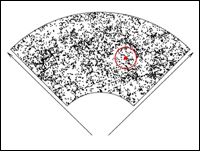
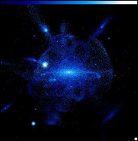
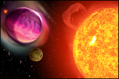

January 10, 2008
|
+ enlarge  |
| A Sloan Digital Sky Survey map of the distribution of luminous galaxies, with a bullseye showing the characteristic scale imprinted by sound waves in the early universe. With three-dimensional maps of 1.5 million luminous galaxies and of absorbing gas towards 160,000 distant quasars, BOSS will measure this scale with high precision, yielding new insights into the nature of dark matter and the geometry of space. (Credit: SDSS) |
|
+ enlarge  |
|
A theoretical model of a galaxy like the Milky Way, showing trails of stars torn from disrupted satellite galaxies that have merged with the central galaxy. SEGUE-2 and APOGEE will measure motions and chemical compositions of half a million stars across the Milky Way to reveal its history and test theories of galaxy formation. (Credit: S. Sharma, J. Bullock, K. Johnston)
|
|
+ enlarge  |
| Artist's rendition of planets orbiting a sun-like star. MARVELS will monitor more than 10,000 stars to detect the motions induced by giant, Jupiter-like planets, providing new constraints on the mechanisms of giant planet formation. (Credit: T. Riecken) |
Building on eight years of extraordinary discoveries by the Sloan Digital Sky Survey (SDSS and SDSS-II), a new program of four coordinated surveys will revolutionize the study of the distant universe, the Milky Way galaxy, and giant planets orbiting other stars. The largest of these surveys will use a novel and powerful technique to study dark energy, one of the biggest mysteries in contemporary science.
"The cosmological measurements in SDSS-III could rewrite fundamental physics, either pinning down the properties of an exotic form of energy that fills the universe or showing that Einstein's theory of gravity fails at cosmological distances," explains Daniel Eisenstein of the University of Arizona and director of the newly formed collaboration.
The SDSS-III program was announced today at the American Astronomical Society meeting in Austin, Texas. It is described in a poster presentation entitled SDSS-III: Massive Spectrographic Surveys of the Distant Universe, the Milky Way Galaxy and Extra-Solar Planetary Systems."
The Alfred P. Sloan Foundation of New York has approved a $7 million grant in support of SDSS-III, conditional on raising the additional funds from collaboration members and federal agencies needed to complete the project.
SDSS-III is slated to run from mid-2008 to mid-2014. Its four component surveys will all operate from the 2.5-meter telescope at Apache Point Observatory in New Mexico, using optical fibers to capture the light of hundreds of objects simultaneously. This technique allowed the SDSS and SDSS-II to create the largest three-dimensional map of the present-day universe.
The largest of the four surveys, the Baryon Oscillation Spectroscopic Survey (BOSS), will measure the expansion of the universe with unprecedented precision. A decade ago, Eisenstein explains, astronomers made the startling discovery that the expansion of the universe is speeding up. "It's like tossing a ball in the air, waiting for it to fall, and instead seeing it accelerate upwards and disappear from sight."
Cosmologists attribute this acceleration to so-called "dark energy," which pervades otherwise empty space and exerts repulsive gravitational force. Dark energy could be the cosmological constant proposed by Albert Einstein in 1917, or it could be a new form of energy whose properties evolve with time. Distinguishing these possibilities, or determining whether the theory of gravity itself is at fault, requires measuring the history of cosmic expansion with very high precision, explains David Schlegel of Lawrence Berkeley National Laboratory, principal investigator of BOSS.
In 2005, the SDSS achieved one of the first clear detections of "baryon acoustic oscillations," a feature imprinted on the clustering of galaxies by sound waves that traveled in the early universe. BOSS will use this feature as a "yardstick in the sky" to measure cosmic distances, says Schlegel. "Our measurements should reach one-percent accuracy and extend to distances of ten billion light years, giving us strong tests of dark energy theories."
While new, more sensitive instruments are being constructed for BOSS, SDSS-III will carry out a one-year extension of SEGUE, an SDSS-II survey mapping the outer Milky Way. "The Galaxy's stellar halo is much more complex than anyone realized a decade ago, and we want to understand what that is telling us about the formation of the Milky Way," explains Constance Rockosi of the University of California at Santa Cruz, the principal investigator of SEGUE-2.
Interstellar dust blocks visible light coming from stars in the inner Milky Way. Infrared light penetrates this dust, revealing stars even from heavily obscured regions near the Galactic center. The new APOGEE survey will employ a unique new instrument that observes infrared light from 300 stars simultaneously, enabling a survey of 100,000 stars across the entire Galaxy.
"When stars die, the chemical elements forged by nuclear reactions in their cores are released into space," explains Steven Majewski of the University of Virginia, principal investigator of APOGEE. "The APOGEE measurements will provide detailed chemical 'fingerprints' for each target star, which in turn reveal the properties of the stars that preceded them. It's the ultimate exercise in forensic archeology."
And what about planets orbiting those stars? Of the 200 or so planetary systems currently known, most are very different from our own solar system, notes Jian Ge of the University of Florida. The majority of known planets are gaseous giants, like Jupiter, but they follow elongated (instead of circular) trajectories and orbit much closer to their parent stars.
Ge is the principal investigator of MARVELS, which will search more than 10,000 stars for orbiting giant planets, a three-fold increase on the number searched by all other telescopes to date. "By systematically monitoring such a large number of stars," says Ge, "MARVELS will address two of the biggest questions in planetary science: how do giant planets form, and why are so many in such unusual orbits?"
Jim Gunn of Princeton University, who has led nearly two decades of construction and operation of the Sloan Digital Sky Survey, is excited about its new ventures. "It's amazing to see that the SDSS can transform scientific fields we hadn't even conceived of 20 years ago."